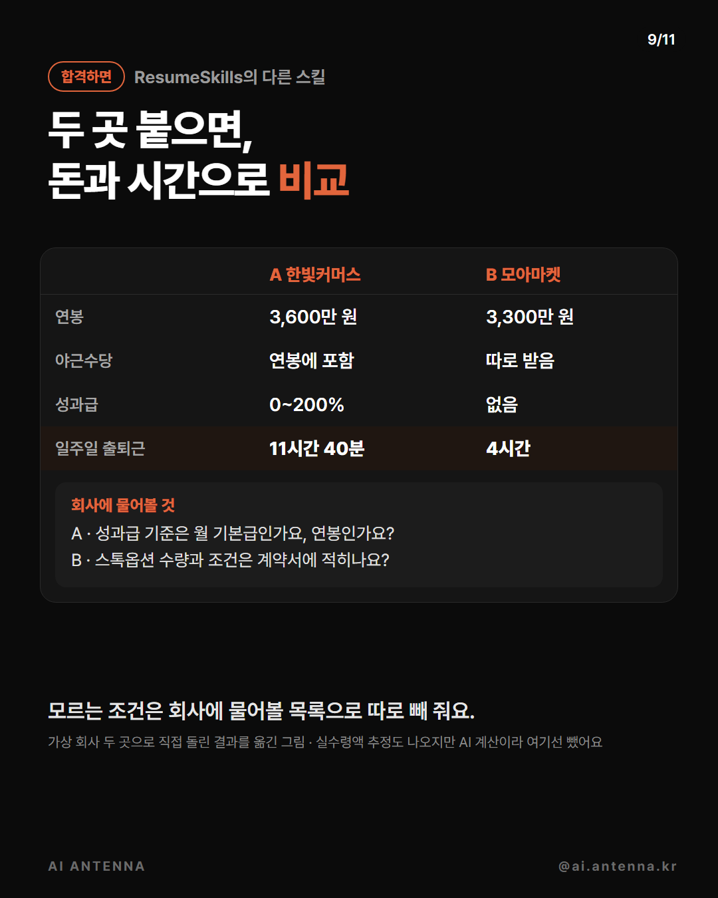

취업 순서대로 붙여 쓰는 AI 도구 7개예요. 직무 고르기(jobfit) → 공고 점수(career-ops) → 이력서 읽힘 검사(Reactive Resume) → 공고 맞춤 이력서(Resume-Matcher) → 경력 문장·합격 비교(ResumeSkills) → 자소서 첨삭(jobstack) → 면접관 3명. 도구는 모두 무료(오픈소스 또는 저희가 만든 파일)지만, 클로드 코드로 쓰는 것은 Claude 유료 요금제가 필요해요. 저희 편에서 이미 다룬 4개는 각 편 정리본에 설치부터 예시까지 자세히 있어요. 화면 속 인물·회사는 모두 시연용 가상이에요.
내 경험(했던 일·잘했던 순간)을 적어 넣으면 진로 상담가·현직자·채용 담당자 셋이 따져서 맞는 직무 3개와 근거 경험·부족한 것·일주일 안에 해 볼 과제를 줘요. 클로드 코드용 파일과 챗GPT용 지침이 둘 다 있어요. 설치·경험 쓰는 틀·결과 읽는 법은 저희 정리본에 있어요: https://imyoung-man.github.io/AI-ANTENNA/aitip-jobfit/guide.html
설치는 터미널에 'npx @santifer/career-ops init' 한 줄(공식 README). 내 이력서와 공고 글을 넣으면 요건을 한 줄씩 대조해 5점 만점 점수를 주고, 4점이 안 되면 이유를, 4점 넘으면 그 공고 표현에 맞춘 이력서 PDF까지 만들어요. 한국 채용 사이트는 자동 검색이 안 돼서 공고 글을 복사해 붙여 넣어요(저희 확인). 자세한 순서: https://imyoung-man.github.io/AI-ANTENNA/aitip-career/guide.html
rxresu.me/ats-checker 에서 가입 없이 이력서 PDF를 끌어다 놓으면 0~100점과 고칠 곳이 나와요. 위의 '파서가 읽는 내용'을 누르면 프로그램이 뽑아낸 글자만 보여요 — 줄이 섞이거나 빠진 곳이 있으면 그 부분 레이아웃을 바꾸세요. 섹션 제목은 영어(Experience·Education·Skills)로 찾아서, 한국어 이력서는 '제목을 못 찾았다'는 항목이 많이 떠요(저희 가상 이력서 60점). 외국계에 내는 영문 이력서 점검에 맞아요. 화면 오른쪽 위에서 한국어를 고를 수 있어요.
rxresu.me에서 무료 가입 → 새 이력서. 왼쪽에 쓰면 오른쪽 종이에 바로 보여요. 디자인의 페이지 언어를 Korean으로 고르면 칸 제목·날짜가 한국어가 되고, 글꼴을 'Noto Sans KR'로 하면 한글이 깔끔해요(11/1 저희 확인). 템플릿을 고르고 PDF로 받아요. AI 기능은 내 AI 키를 연결했을 때만 써요.
공식 설치 문서 기준이에요(저희는 직접 돌리지 않았어요). 깃허브에서 받은 뒤 백엔드(apps/backend: uv sync → uv run app)와 프런트엔드(apps/frontend: npm install → npm run dev)를 각각 켜고 브라우저에서 localhost:3000을 열어요. 도커가 있으면 아래 명령 한 줄. 설정에서 AI를 골라요 — 내 API 키, 내 컴퓨터 모델(Ollama, 무료), 또는 클로드 코드를 '코딩 에이전트'로. 대표 이력서(PDF·DOCX)를 올리고 공고를 붙여 넣으면 맞춘 이력서·커버레터·연락 메일이 나와요. 원래 이력서에 없는 기술·회사·숫자는 넣지 않게 되어 있어요(README). 화면 언어는 한국어 파일이 있어요.
클로드 코드를 쓸 폴더에서 아래 명령 한 줄이면 그 폴더에만 20개가 들어가요(공식 README의 npx skills 방식). 또는 깃허브에서 받아 skills 폴더 안의 것들을 내 폴더의 .claude/skills 로 복사해도 돼요(저희는 이 방법으로 확인). 스킬은 영어로 쓰여 있지만 한국어로 물으면 한국어로 답해요. 요청 앞에 /스킬이름 을 붙이면 확실히 그 스킬을 써요.
/resume-quantifier 뒤에 경력 문장을 붙여 넣어요(아래 '복사해서 쓰기' ①). 저희가 넣은 '동아리에서 행사 홍보를 맡음'은 '홍보물 [ ]종을 제작·배포해 참가자 [ ]명을 모음(전년 대비 [ ]% 증가)'처럼 빈칸이 있는 문장과, 그 숫자를 어디서 확인할지(신청 폼 응답 수·출석부·단톡방 공지)로 돌아왔어요. 없는 숫자를 지어내지 말라고 요청에 꼭 넣으세요.
/offer-comparison-analyzer 뒤에 두 회사 조건(연봉·성과급·야근수당·근무 방식·출퇴근 시간 등)을 적어요(아래 ②). 한 표로 비교하고, 모르는 조건은 '회사에 물어볼 것' 목록으로 따로 빼 줘요. 실수령액 추정도 나오지만 AI 계산이니 그대로 믿지 말고 급여 계산기로 다시 확인하세요.

한국 취업 순서대로 스킬 16개가 들어 있어요 — 사람인·잡코리아·원티드·점핏 공고 찾기, 회사 분석, 자소서 첨삭(공고 키워드 반영률·자주 걸리는 7가지 진단·고친 문장), 모의면접 7종류. 근거가 없는 곳은 [확인 필요]로 남겨요. 설치부터 예시까지: https://imyoung-man.github.io/AI-ANTENNA/aitip-jobstack/guide.html
클로드 코드에 면접관 파일 3개를 넣으면 압박·인사·실무 팀장 면접관이 내 자소서를 각자 다른 기준으로 동시에 심사해요. 면접관별 점수·판정·실제로 나올 질문·고칠 점이 나와요. 여러 클로드가 동시에 일해서 사용량이 평소보다 많아요. 파일 원문과 실행 순서: https://imyoung-man.github.io/AI-ANTENNA/aitip-interview/guide.html
클로드 코드 입력창. 아래 문장들을 내 경력으로 바꿔 쓰세요
/resume-quantifier 아래는 제 이력서 경력 문장이에요. 숫자가 없어서 약한 문장을 성과가 보이는 문장으로 고쳐 주세요. 없는 숫자는 지어내지 말고, 내가 확인해서 채울 칸은 [ ]로 비워 두고 무엇을 확인하면 되는지 적어 주세요. 한국어로, 표(원래 문장 | 고친 문장 | 확인할 것)로. - 카페 아르바이트하며 SNS 계정을 운영함 - 동아리에서 행사 홍보를 맡음
클로드 코드 입력창. 회사 조건만 바꿔 쓰세요
/offer-comparison-analyzer 두 곳에 합격했어요. 한국어로, 두 회사를 한 표로 비교하고 실제로 손에 쥐는 돈 기준으로 정리해 주세요. 모르는 항목은 지어내지 말고 '회사에 물어볼 것'으로 따로 적어 주세요. A사: 연봉 ___(포괄임금 여부), 성과급 ___, 출근 방식 ___, 편도 출퇴근 ___ B사: 연봉 ___, 성과급 ___, 출근 방식 ___, 편도 출퇴근 ___
클로드 코드를 쓸 폴더에서 터미널
npx skills add Paramchoudhary/ResumeSkills -y
터미널 (Node.js 필요)
npx @santifer/career-ops init
브라우저
https://rxresu.me/ats-checker
터미널 → 브라우저에서 localhost:3000
docker run --name resume-matcher -p 3000:3000 -v resume-data:/app/backend/data ghcr.io/srbhr/resume-matcher:latest
설치·예시가 자세히 있어요
jobfit https://imyoung-man.github.io/AI-ANTENNA/aitip-jobfit/guide.html career-ops https://imyoung-man.github.io/AI-ANTENNA/aitip-career/guide.html jobstack https://imyoung-man.github.io/AI-ANTENNA/aitip-jobstack/guide.html 면접관 3명 https://imyoung-man.github.io/AI-ANTENNA/aitip-interview/guide.html
공식 도구 목록 기준이에요. 이번 편에서 직접 돌려 보지 않았어요.
답을 바로 주지 않고 5단계 힌트로 이끌어 줘요. 모의 코딩 면접 모드도 있어요. 깃허브에서 받아 .claude/skills 폴더에 복사 · github.com/karanb192/algo-sensei
지원한 곳을 단계별 보드로 관리해요(공식 문서 기준).
이력서에 맞춰 링크드인 프로필을 다듬어요.
다른 업계로 옮겨 쓸 수 있는 경험을 찾아요.
도움이 되셨다면
@ai.antenna.kr
에서 바로 쓰는 AI 활용법을 계속 올립니다.